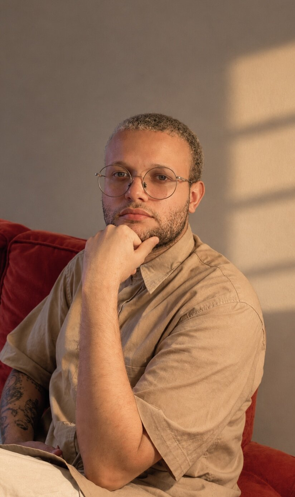
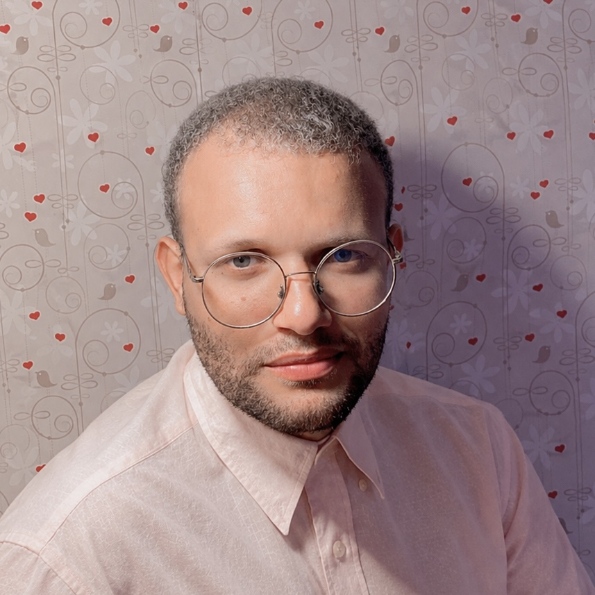

01 / emoções
Acolhimento • Escuta • Presença
Compreender a si também é um caminho.
Psicoterapia para quem deseja olhar para a própria história, acolher o que sente e construir novas possibilidades.
Agendar uma conversa ⟶
Regulação Emocional • Autoconhecimento • Comportamento • Saúde Mental
Um olhar para diferentes experiências
O que atravessa a sua história?
Cada pessoa chega à terapia com uma história singular. Estes são alguns temas que podem encontrar espaço no processo terapêutico.
02 / humor
Depressão
03 / vínculos
Relações
04 / identidade
Autoestima
05 / neurodiversidade
Autismo (TEA)
06 / atenção
TDAH

Matheus Caribé · Psicólogo
Sobre mim
Prazer, sou Matheus Caribé.
Sou psicólogo e acredito no poder da escuta, do diálogo e da compreensão como caminhos para uma vida mais consciente e equilibrada.
Aqui, você encontra um espaço para falar sobre o que sente, refletir sobre suas escolhas e construir, junto comigo, novas formas de lidar com o que te atravessa.
Um encontro com a sua própria história.
CRP 03/26103
O processo terapêutico
O que a psicoterapia pode proporcionar?
Um espaço de cuidado para desenvolver novas maneiras de compreender a si, suas relações e os desafios do cotidiano.
- Maior compreensão das próprias emoções
- Desenvolvimento de autonomia emocional
- Identificação de padrões de comportamento
- Estratégias para lidar com dificuldades
- Relações mais saudáveis consigo e com os outros
- Busca por autoconhecimento e uma vida autêntica
Como funciona
Um processo construído em conjunto.
01
Primeiro contato
Conversamos sobre suas necessidades, expectativas e dúvidas sobre o acompanhamento.
02
Encontros terapêuticos
Um espaço de escuta, reflexão e trabalho conjunto, respeitando seu tempo e sua história.
03
Construção de caminhos
Estratégias e intervenções são construídas de acordo com suas demandas e objetivos.
Perguntas frequentes
Talvez você queira saber.
Preciso estar passando por um momento difícil para fazer terapia?
Não. A psicoterapia também pode ser um espaço de autoconhecimento, prevenção e desenvolvimento pessoal. Você não precisa esperar chegar ao limite para buscar cuidado.
Como funciona a primeira sessão?
É um momento inicial para conversarmos sobre o que motivou a busca por terapia, suas expectativas e dúvidas, além de conhecermos a forma de trabalho.
O atendimento é online ou presencial?
O atendimento pode ser online ou presencial na cidade de Salvador/BA.
Qual é a duração e a frequência dos encontros?
Encontros semanais, com duração de 40 a 60 minutos.
O próximo capítulo pode começar aqui
Cuidar da sua mente também é um ato de coragem.
Você não precisa enfrentar tudo sozinho.
Agendar minha sessão ⟶